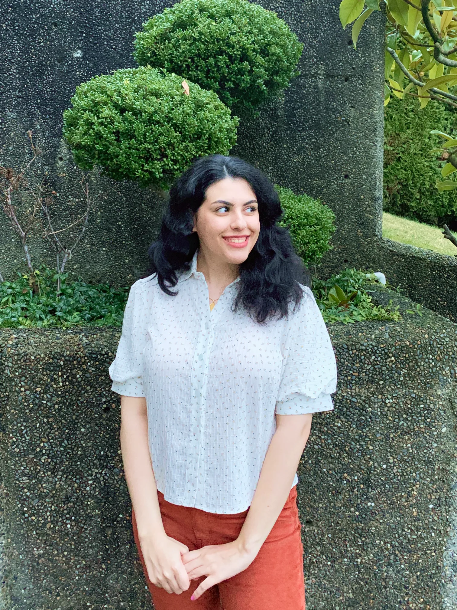

So you want to know more about me...

My name is Sahar. I recently graduated from Simon Fraser University's School of Interactive Arts and Technology with a concentration in Design. Thanks to the interdisciplinary nature of my academic program and my varied work and volunteer experience, I am well-versed in various aspects of design such as UI and UX design, Product Design and Strategy, Design Systems, UX research, Visual design, Art Direction; as well as application, and web design and development.
As a designer, I'm driven by the challenge of understanding users, creatively addressing their needs, and crafting inclusive and enjoyable experiences. Besides design, I enjoy coding, visiting art exhibitions, watching movies with beautiful cinematography, gaming, and going on walks during golden hours.
Currently seeking a full time Product / UX / Visual Design position.